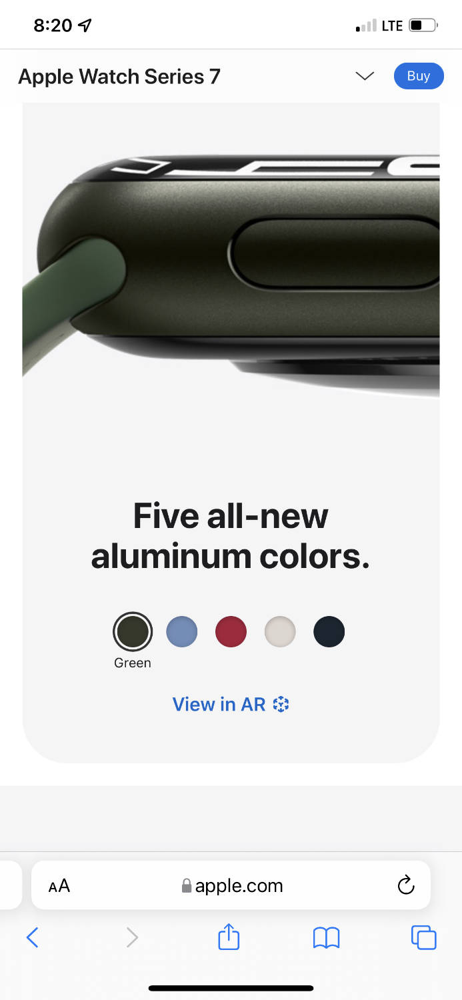
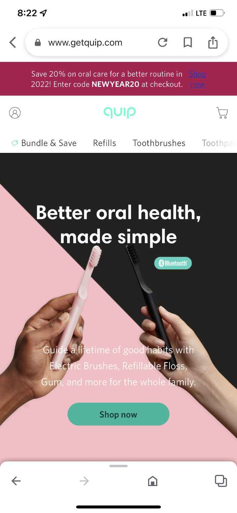
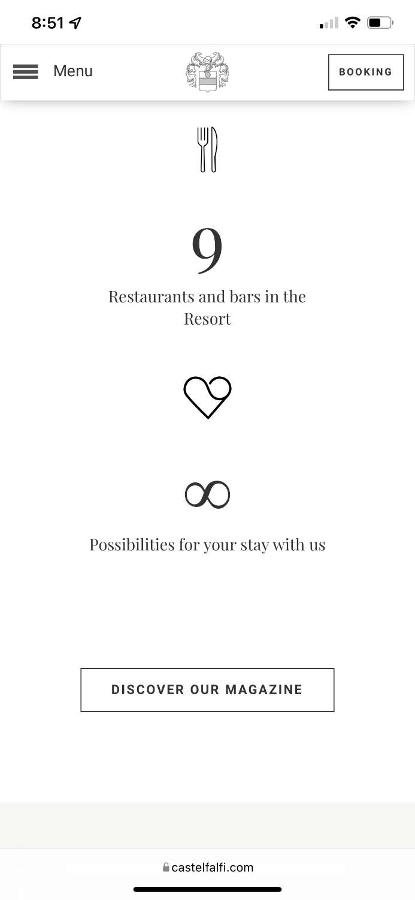

White Space
Apple
Apple Website I have always appreciated Apple's use of whitespace on their website. It draws the users' attention to the most important thing on their website: the product. Their products have also always had very clean and minimal designs, so using these principles on their website compliments the products very well. In this example, they use literal white space surrounding a 3D image of an Apple Watch and the focus is immediately drawn to it. The rest of the website is easy to navigate and reflects their product design.
Visual Heirarchy
Quip
Quip Website Quip's home website is a good example of visual heirarchy. The color of the heading immediately drew my eyes to the brand name, and then contrast takes attention to their tagline. If someone didn't know what quip is, they would realize within the first few seconds of the page loading that the brand name Quip sells toothbrushes that are geared toward making oral health simple. The different images that carousel through have different aspects of visual heirarchy using differing levels of contrast and proximity.
Proximity
Toscano Resort Castelfalfi
Caselfalfi Scrolling down through this website, there are a few different examples of grouping. The most obvious one however is through a regular sized PC browswer window. Each icon shown in this screenshot is grouped together with a number and quick fact. The user is easily able to visual what the number portrays and move through the pattern to gain the information quickly. This one is also an excellent example of clean design, whitespace, and repetition.